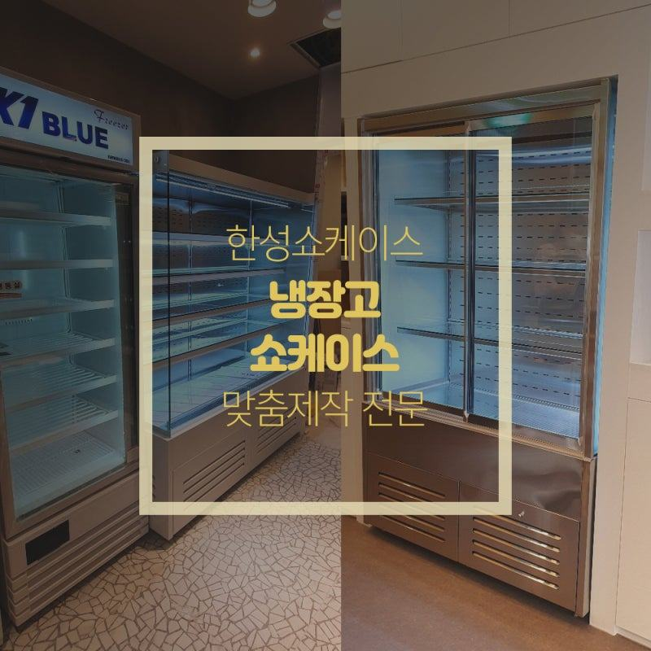
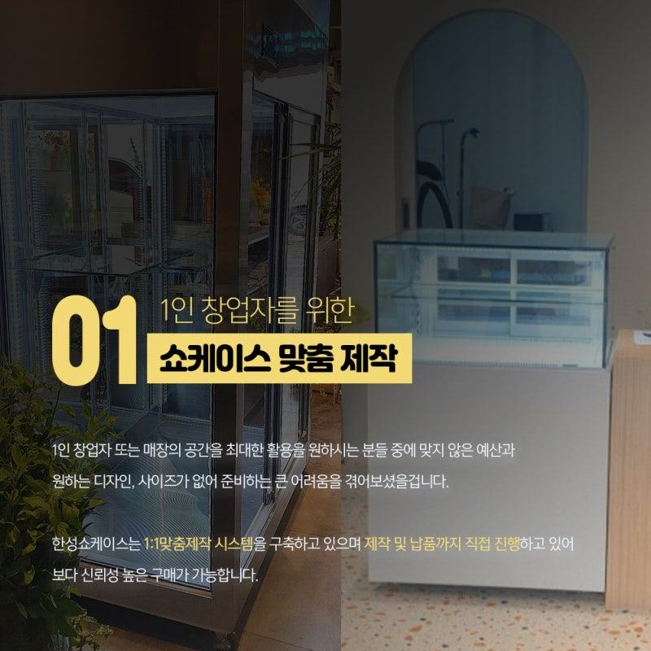
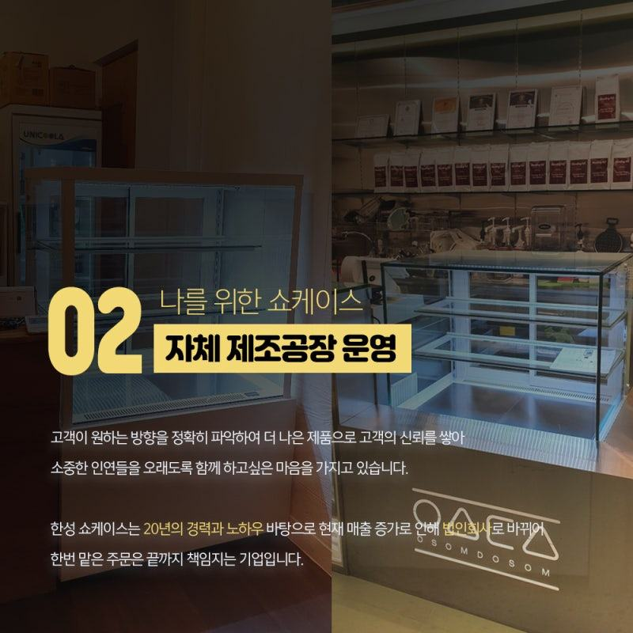
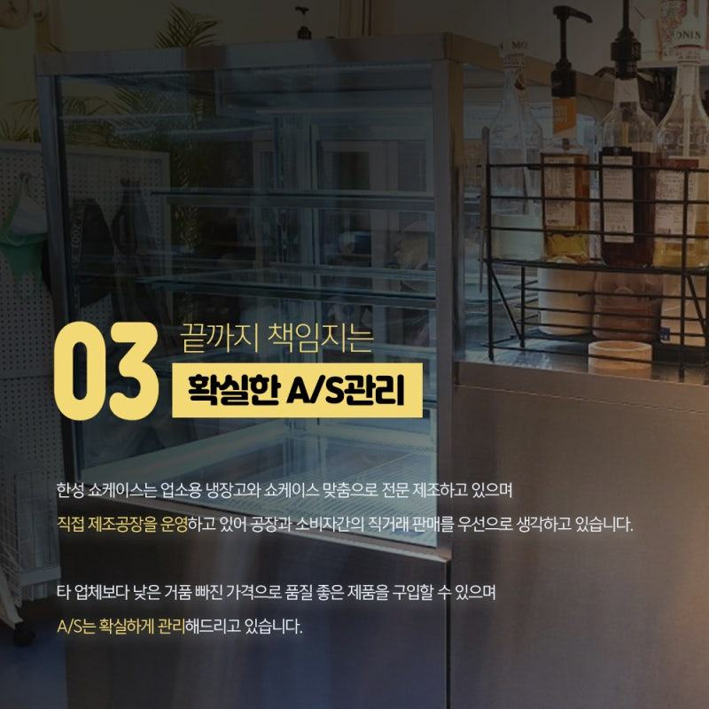
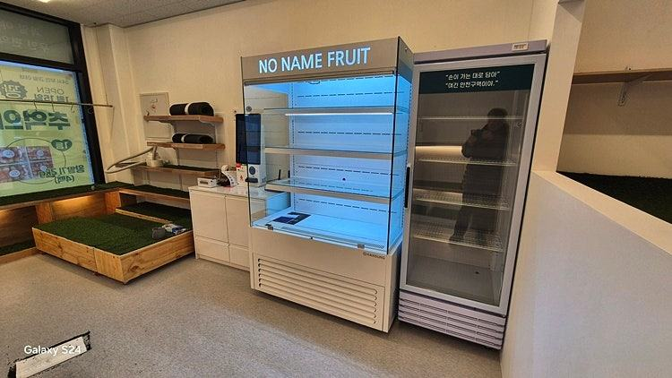

과일진열쇼케이스
과일쇼케이스 고장, 과일 매장에서 유독 자주 생기는 증상과 대처

과일쇼케이스가 시원하지 않거나 물이 새면 먼저 과일 박스가 바람길을 막지 않았는지, 배수구가 과일 부스러기로 막히지 않았는지부터 보세요. 그래도 온도가 내려가지 않거나 돌다 멈추기를 반복한다면 에바 성에, 가스 부족, 콤프레셔 약화일 수 있으니 전문가 점검을 받으셔야 합니다.
안녕하세요. 과일 가게와 프루트샵의 진열 쇼케이스를 만들고 관리하는 한성쇼케이스입니다.
과일가게 사장님들은 쇼케이스 이상을 과일로 먼저 알아채십니다. 어제 들여온 딸기가 오늘 아침 물러 있거나, 포도알 표면에 물기가 잔뜩 맺혀 있으면 그제야 온도 표시를 보게 되죠.
과일쇼케이스는 다른 업종보다 상품을 박스째 많이 넣고, 과일에서 나오는 수분과 부스러기가 많아 고장 원인도 조금 다릅니다.
부품이 망가진 경우도 있지만, 매장에서 쓰는 방식 때문에 생기는 문제가 꽤 많습니다.
오늘은 과일쇼케이스에서 자주 보는 고장 증상과 원인, 사장님이 먼저 해 볼 수 있는 대처를 정리해 드리겠습니다.
1. 시원하지 않을 때, 박스부터 확인
과일 매장은 입고량이 많은 날 박스째 쇼케이스 안에 밀어 넣는 일이 잦습니다. 박스가 뒤쪽 흡입구나 위쪽 토출구를 막으면 냉기가 돌지 못해 앞쪽 과일부터 온도가 올라갑니다.
장비는 열심히 도는데 시원하지 않다면 먼저 박스 배치를 바꿔 보세요.
수박이나 멜론처럼 큰 과일을 한쪽에 몰아 쌓아도 같은 일이 생깁니다. 상온에서 막 들어온 과일을 한꺼번에 많이 넣으면 내부 온도가 한동안 올라가는 것도 자연스러운 현상이니, 입고 직후보다 몇 시간 뒤 온도를 확인해 보세요.
- 흡입구와 토출구 앞의 박스를 치워 보세요.
- 큰 과일은 한쪽에 몰지 말고 나눠 놓으세요.
2. 물이 새거나 바닥이 젖을 때
과일 꼭지, 잎, 짓무른 과일 조각이 배수구로 흘러 들어가 막히는 경우가 많습니다. 배수가 막히면 물받이가 넘쳐 바닥으로 물이 새고, 고인 물에서 냄새가 나기 시작합니다.
배수구는 주기적으로 열어 이물질을 빼 주시고, 짓무른 과일은 그때그때 골라내 주세요. 오픈형 제품이라면 앞쪽 물받이에 과일 즙이 고여 끈적해지기 쉬우니 영업 마감 때 한 번씩 닦아 주시는 게 좋습니다.


3. 돌다 멈추기를 반복할 때
잘 돌다가 멈추고 다시 돌기를 반복한다면 냉기를 만드는 에바에 성에가 두껍게 낀 경우일 수 있습니다.
과일에서 나오는 수분이 많아 성에가 생기기 쉬운 환경입니다. 잠시 가동을 멈추거나 온도를 높게 올려 얼음을 녹이면 바람이 다시 나오는지 확인할 수 있습니다.
성에를 뗄 때는 과일을 모두 빼고 전원을 끈 뒤, 녹은 상태에서 고무망치로 살살 두드려 떼어 내세요.
칼이나 송곳처럼 날카로운 도구를 쓰면 냉각관이 상할 수 있습니다.
- 성에 제거 전에는 과일을 빼고 전원을 끄세요.
- 날카로운 도구는 쓰지 마세요.
4. 전문가를 불러야 하는 경우
설정 온도까지 내려가는 데 예전보다 훨씬 오래 걸린다면 냉매 가스가 부족할 수 있습니다. 가스 문제가 아닌데도 냉각이 약하다면 오래 쓰면서 콤프레셔 힘이 떨어진 경우일 수 있습니다.
둘 다 사장님이 직접 해결하기 어려우니 점검을 받으세요.
청소하다 온도 조절기를 건드려 설정이 바뀌거나 손상되는 경우도 있습니다. 에러 표시 없이 온도가 안 맞는다면 조절기 상태도 함께 봐 달라고 말씀하세요.
체크리스트
- 박스가 흡입구·토출구를 막는지
- 배수구 과일 부스러기
- 오픈형 앞쪽 물받이 청소
- 에바 성에와 반복 정지 여부
- 설정 온도 도달 시간
- 온도 조절기 설정 상태
현장에서 자주 보는 경우: 온도를 끝까지 내려도 안 내려갈 때
"설정을 가장 낮게 해도 온도가 안 내려가요"라는 연락을 받고 가 보면, 에러 표시는 없는데 온도 유지가 안 돼 상품이 상하기 시작한 경우가 많습니다.
청소하다 온도 조절기를 건드린 경우, 가스가 부족한 경우, 에바가 얼어 바람이 막힌 경우, 오래 써서 콤프레셔 힘이 약해진 경우가 대표적인 원인입니다.
그래서 원인을 하나씩 나눠 봅니다. 돌다 멈추기를 반복하면 성에를 먼저 녹여 보고, 설정 온도까지 오래 걸리면 가스를 확인합니다.
평소 주기적인 청소와 점검을 해 두시면 영업 중에 갑자기 멈추는 일을 상당히 줄일 수 있습니다.





자주 묻는 질문
과일쇼케이스 안쪽에 물방울이 많이 맺히는데 고장인가요?
과일에서 나오는 수분 때문에 어느 정도는 생길 수 있습니다. 다만 물이 흘러내리거나 바닥이 젖는다면 배수 막힘이나 문 패킹을 점검해 보세요.
고장 나면 과일은 어떻게 보관하나요?
잎채소처럼 무르기 쉬운 품목과 딸기, 포도 같은 예민한 과일부터 다른 냉장고로 옮기세요. 사과나 귤처럼 상대적으로 버티는 과일은 서늘한 곳에 잠시 두셔도 됩니다.
A/S는 얼마나 빨리 받을 수 있나요?
지역과 접수 상황에 따라 다르지만, 한성쇼케이스는 전국 240여 개 A/S 센터를 통해 가까운 곳에서 대응합니다.
증상을 영상으로 찍어 두시면 접수가 수월합니다.
매장 조건에 맞춰 만드는 한성쇼케이스
원하시는 제품 사진과 설치할 공간 사진만 보내 주셔도 매장에 맞는 구성을 추천해 드립니다.
- 전국 240여 개 A/S 전담 센터 운영
- 본사 대량 자재 매입으로 품질 대비 합리적인 가격
- 유럽제·삼성 냉각 콤프레셔 적용
- 국내 최초 쇼케이스 전문 디자이너 상주
매장 폭과 원하는 진열 구성을 알려 주세요. 실측과 견적을 안내해 드립니다.
031-986-2458